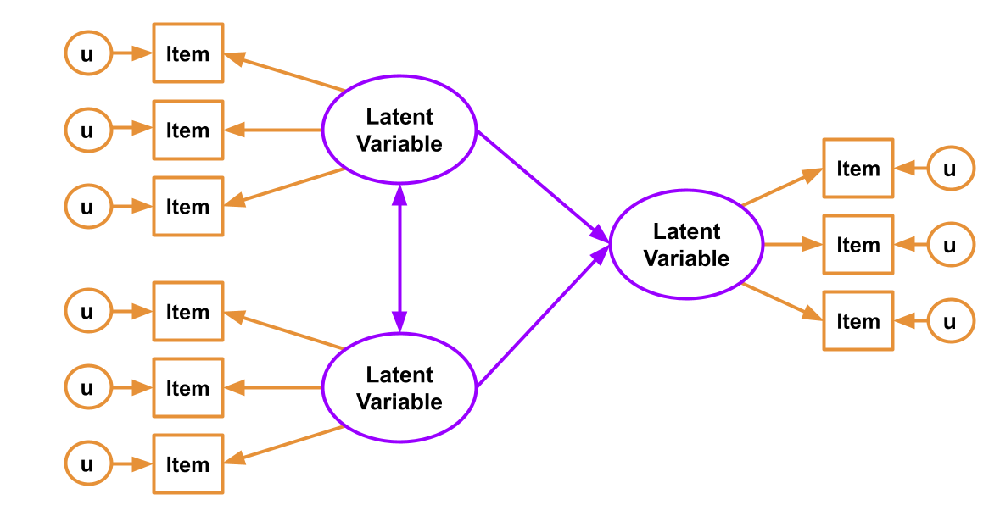
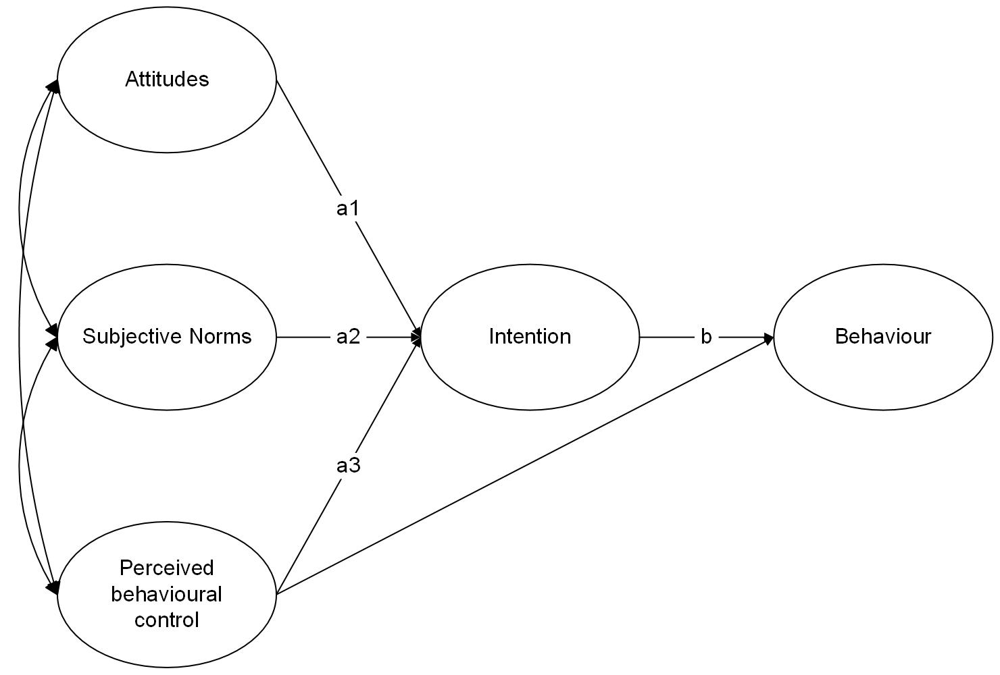

You have probably heard the term “Structural Equation Modelling (SEM)” for a few weeks now, but we haven’t been very clear on what exactly it is. Is it CFA? Is it Path Analysis? In fact it is both - it is the overarching framework of which CFA and Path Analysis are just particular cases. The beauty comes in when we put the CFA and Path Analysis approaches together.
Path analysis, as we saw last week, offers a way of specifying and evaluating a structural model, in which variables relate to one another in various ways, via different (sometimes indirect) paths. Common models like our old friend multiple regression can be expressed in a Path Analysis framework.
Factor Analysis, on the other hand, brings something absolutely crucial to the table - it allows us to mitigate some of the problems which are associated with measurement error by specifying the existence of some latent variable which is measured via some observed variables. No question can perfectly measure someone’s level of “anxiety”, but if we take a set of 10 carefully chosen questions, we can consider the shared covariance between those 10 questions to represent the construct that is common between all of them (they all ask, in different ways, about “anxiety”), also modeling the unique error with which each individual question fails to perfectly represent the entire construct.
Combine them and we can reap the rewards of having both a structural model and a measurement model. The measurement model is our specification between the items we directly observed, and the latent variables of which we consider these items to be manifestations. The structural model is our specified model of the relationships between the latent variables.

Figure 1: SEM diagram. Measurement model in orange, Structural model in purple
You can’t test the structural model if the measurement model is bad
If you test the relationships between a set of latent factors, and they are not reliably measured by the observed items, then this error propagates up to influence the fit of the structural model.
To test the measurement model, it is typical to saturate the structural model (i.e., allow all the latent variables to correlate with one another). This way any misfit is due to the measurement model only.
Alternatively, we can fit individual CFA models for each construct and assess their fit (making any reasonable adjustments if necessary) prior to then fitting the full SEM.
Exercising Exercises
Dataset: tpb2
The “Theory of Planned Behaviour” is a theory about why people engage in physical activity (i.e. why people exercise).
The theory is represented in the diagram in Figure 2 (only the latent variables and not the measured items are shown). Attitudes refer to the extent to which a person has a favourable view of exercising; subjective norms refer to whether they believe others whose opinions they care about believe exercise to be a good thing; and perceived behavioural control refers to the extent to which they believe exercising is under their control. Intentions refer to whether a person intends to exercise and behaviour is a measure of the extent to which they exercised. Each construct is measured using four items.
Figure 2: Theory of planned behaviour (latent variables only)
When I think about people whose opinions matter to me, I believe they value and support regular exercise
SN2
I feel pressure from those I care about to exercise regularly
SN3
Most people who are important to me approve of my exercising
SN4
Most people like me exercise regularly
PBC1
My exercise routine is up to me and only me
PBC2
I am confident that if I want to then I can exercise regularly
PBC3
I believe I have the ability to overcome any obstacles that may prevent me from exercising regularly.
PBC4
I feel capable of sticking to a consistent exercise schedule, even when faced with challenges or distractions
attitude1
I see exercising as an enjoyable and rewarding activity.
attitude2
I believe that exercising contributes positively to my overall well-being and health.
attitude3
I view exercising as an important part of maintaining a healthy lifestyle.
attitude4
I feel energized and invigorated after engaging in physical exercise.
int1
I am determined to take concrete steps towards establishing a consistent exercise habit
int2
I intend to exercise for at least 20 minutes, three times per week for the next three months.
int3
I have made a firm decision to prioritize exercise and allocate time for it in my schedule
int4
I intend to be in shape within the next three months.
int5
I am committed to incorporating regular exercise into my weekly routine.
beh1
I currently engage in physical activity for at least 20 minutes, three times per week, as recommended.
beh2
I already allocate time for exercise in my weekly schedule and adhere to it regularly.
beh3
I track my exercise sessions and ensure I meet my weekly goals
beh4
I do not currently exercise enough
Question 1
Load in the various packages you will probably need (tidyverse, lavaan), and read in the data using the appropriate function.
We’ve given you .csv files for a long time now, but it’s good to be prepared to encounter all sorts of weird filetypes. Can you successfully read in from both types of data?
Our fit is good: RMSEA<.05, SRMR<.05, TLI>0.95 and CFI>.95.
We should also check that all loadings are significant and \(>|.30|\).
To save space I am going to not show the entire summary output here, but just pull out the parameter estimates:
parameterestimates(att_mod.est)
lhs op rhs est se z pvalue ci.lower ci.upper
1 att =~ attitude1 0.682 0.051 13.355 0 0.582 0.782
2 att =~ attitude2 0.617 0.045 13.656 0 0.528 0.705
3 att =~ attitude3 0.681 0.049 13.928 0 0.585 0.777
4 att =~ attitude4 0.644 0.048 13.415 0 0.550 0.738
5 attitude1 ~~ attitude1 1.097 0.069 15.883 0 0.961 1.232
6 attitude2 ~~ attitude2 0.837 0.054 15.498 0 0.731 0.943
7 attitude3 ~~ attitude3 0.959 0.063 15.121 0 0.835 1.084
8 attitude4 ~~ attitude4 0.966 0.061 15.809 0 0.847 1.086
9 att ~~ att 1.000 0.000 NA NA 1.000 1.000
They all look good!
Solution 3. Following the same logic as for the Attitudes, let’s fit the CFA for Subjective norms. Again, all fit measures are very good, and loadings are all significant at greater than 0.3.
Solution 4. All good with Perceived Behavioural Control!
Almost too good (TLI>1, and RMSEA is coming out at exactly 0!), but this is most probably because of this being fake data.
When data is simulated based on a specific model, then fitting that same model structure to the data will obviously fit extremely well! s
It looks like correlating the residuals for items int2 and int4 would improve our model. The expected correlation is 0.757, which is fairly large (remember correlations are between -1 and 1).
Note that the items have a possible theoretical link too, beyond just “intention to exercise”. It looks like both int2 and int4 are specifically about intentions in the next three months. It might make sense that responses to these two items are related more than just representing general ‘intention’.
When we include this covariance, our model fit looks much better!
Solution 6. Finally, the behaviour model looks absolutely fine.
Note that bey4 has a negative loading, which is perfectly okay. In fact, if you look at the items, you’ll notice that this is the only item that is reversed (higher scores on the item reflect less exercising)
Using lavaan syntax, specify the full structural equation model that corresponds to the model in Figure 2. For each construct use the measurement models from the previous question.
Hints
This involves specifying the measurement models for all the latent variables, and then also specifying the relationships between those latent variables. All in the same model!
Solution 7.
TPB_model<-' # measurement models att =~ attitude1 + attitude2 + attitude3 + attitude4 SN =~ SN1 + SN2 + SN3 + SN4 PBC =~ PBC1 + PBC2 + PBC3 + PBC4 intent =~ int1 + int2 + int3 + int4 + int5 beh =~ beh1 + beh2 + beh3 + beh4 # covariances between items int2 ~~ int4 # regressions beh ~ intent + PBC intent ~ att + SN + PBC # covariances between attitudes, SN, and PBC att ~~ SN att ~~ PBC SN ~~ PBC'
Question 4
Estimate and evaluate the model
Does the model fit well?
Are the hypothesised paths significant?
Solution 8. We can estimate the model using the sem() function.
As with cfa(), by default the sem() function will scale the latent variables by fixing the loading of the first item for each latent variable to 1.
We can see that the model fits well according to RMSEA, SRMR, TLI and CFI.
From the output below, all of the hypothesised paths in the theory of planned behaviour are statistically significant.
In this case, none of the expected parameter changes are large enough that we would consider including any additional parameters
Question 6
Test the indirect effect of attitudes, subjective norms, and perceived behavioural control on behaviour via intentions.
Remember, when you fit the model with sem(), use se='bootstrap' to get boostrapped standard errors (it may take a few minutes). When you inspect the model using summary(), get the 95% confidence intervals for parameters with ci = TRUE.
Solution 10. First, let’s name the paths in the structural equation model:

To test these indirect effects we create new a parameter for each indirect effect:
TPB_model2 <-' # measurement models att =~ attitude1 + attitude2 + attitude3 + attitude4 SN =~ SN1 + SN2 + SN3 + SN4 PBC =~ PBC1 + PBC2 + PBC3 + PBC4 intent =~ int1 + int2 + int3 + int4 + int5 beh =~ beh1 + beh2 + beh3 + beh4 # covariances between items int2 ~~ int4 # regressions beh ~ b*intent + PBC intent ~ a1*att + a2*SN + a3*PBC # covariances between attitudes, SN, and PBC att ~~ SN att ~~ PBC SN ~~ PBC # indirect effects: ind1 := a1*b #indirect effect of attitudes via intentions ind2 := a2*b #indirect effect of SN via intentions ind3 := a3*b #indirect effect of PBC via intentions'
When we estimate the model, we request bootstrapped standard errors:
We can see that all of the indirect effects are statistically significant at p<.05 as none of the 95% confidence intervals for the coefficients include zero.
Question 7
Write up your analysis as if you were presenting the work in academic paper, with brief separate ‘Method’ and ‘Results’ sections
Solution 11. Method
We tested a theory of planned behaviour model of physical activity by fitting a structural equation model in which attitudes, subjective norms, perceived behavioural control, intentions and behaviour were latent variables defined by four items. We first tested the measurement models for each construct by fitting a one-factor CFA model. Latent variable scaling was by fixing the loading of the first item for each construct to 1.
Within the SEM, behaviour was regressed on intentions and perceived behavioural control and intentions were regressed on attitudes, subjective norms, and perceived behavioiural control. In addition, attitudes, subjective norms, and perceived behavioural control were allowed to covary. The indirect effects of attitudes, subjective norms and perceived behavioural control on behaviour were calculated as the product of the effect of the relevant predictor on the mediator (intentions) and the effect of the mediator on the outcome. The statistical significance of the indirect effects were evaluated using bootstrapped 95% confidence intervals with 1000 resamples.
In all cases models were fit using maximum likelihood estimation and model fit was judged to be good if CFI and TLI were \(>.95\) and RMSEA and SRMR were \(<.05\). Modification indices and expected parameter changes were inspected to identify any areas of local mis-fit but model modifications were only made if they could be justified on substantive grounds.
Results
All measurement models fit well (CFI and TLI \(>.95\) and RMSEA and SRMR \(<.05\)) with the exception of the measurement model for intentions. Modification indices suggested the inclusion of residual covariance between two items on the intentions scale (int2 and int4) that both made specific reference to short term intentions. The addition of this parameter resulted in a good fit. The full structural equation model (with the residual covariance between int2 and int4 included) fit well (CFI = 0.99, TLI = 0.99, RMSEA = 0.01, SRMR = 0.03). Unstandardised parameter estimates are provided in Table 2. All of the hypothesised paths were statistically significant at \(p<.05\). Significant indirect effects suggested that intentions mediate the effects of attitudes, subjective norms, and perceived behavioural control on behaviour whilst perceived behavioural control also has a direct effect on behaviour. Results thus provide support for a theory of planned behaviour model of physical activity.
Table 2: Unstandardised parameter estimates for structural equation model for a theory of planned behaviour model of physical activity. Note: PBC = Perceived Behavioural Control, CI = Confidence Interval